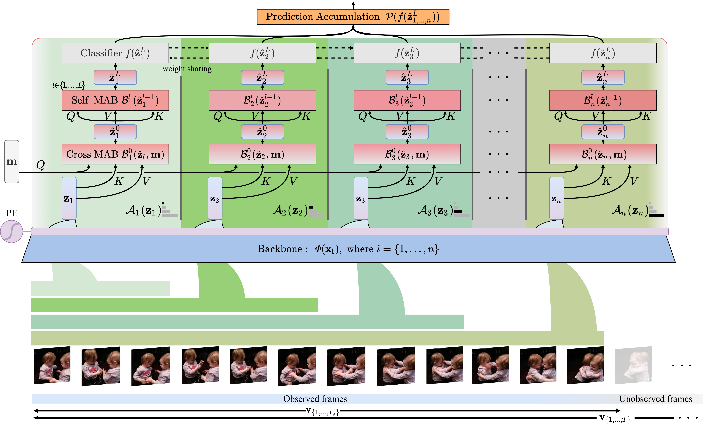

Temporal Progressive Attention for Early Action Prediction
- Alexandros Stergiou Dima Damen University of Bristol

Abstract
Early action prediction deals with inferring the ongoing action from partially-observed videos, typically at the outset of the video. We propose a bottleneck-based attention model that captures the evolution of the action, through progressive sampling over fine-to-coarse scales. Our proposed Temporal Progressive (TemPr) model is composed of multiple attention towers, one for each scale. The predicted action label is based on the collective agreement considering confidences of these attention towers. Extensive experiments over three video datasets showcase state-of-the-art performance on the task of Early Action Prediction across a range of backbone architectures. We demonstrate the effectiveness and consistency of TemPr through detailed ablations.